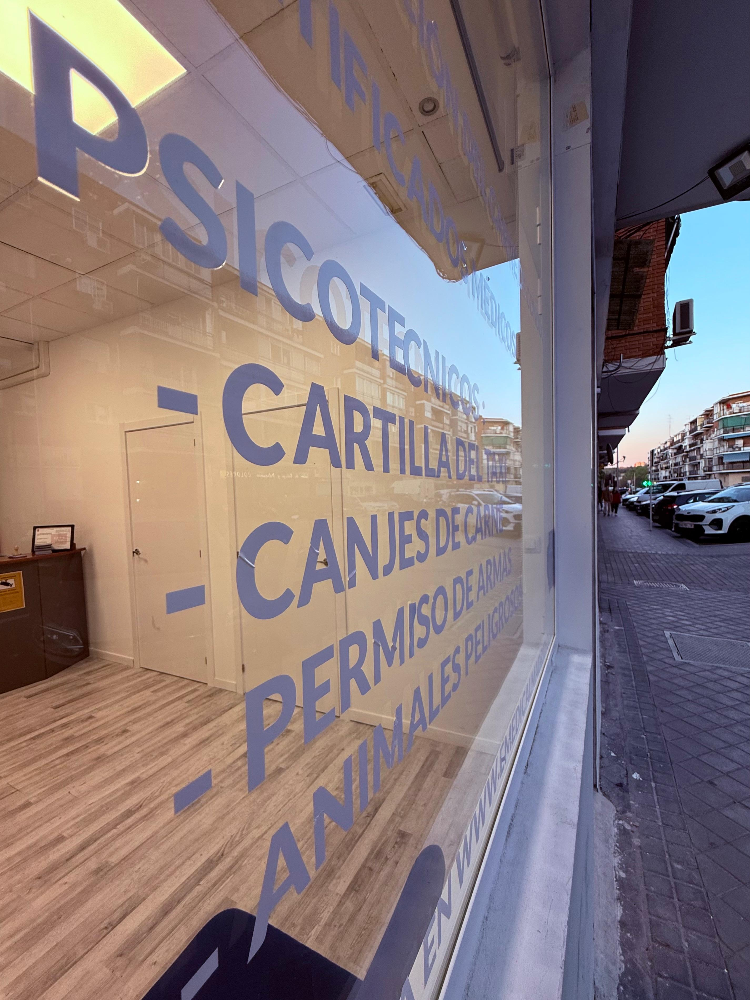

Emedical Madrid
Centro de reconocimientos médicos y psicotécnicos oficiales para vigilantes de seguridad, armas, perros peligrosos y patrón de embarcación.
üìû Llámanos al 613 000 030Centro de reconocimientos m√©dicos y psicot√©cnicos oficiales para vigilantes de seguridad, armas, perros peligrosos y patr√≥n de embarcaci√≥n.
üìû Llámanos al 613 000 030En Emedical Madrid, situado en Calle Mezquita 5, Madrid capital, ofrecemos psicot√©cnicos oficiales adaptados a las necesidades de profesionales de seguridad, mar√≠timos y titulaciones espec√≠ficas.
Nuestro centro especializado realiza pruebas psicotécnicas diseñadas para cumplir con los requisitos oficiales y garantizar tu éxito en la obtención o renovación de licencias y permisos profesionales.
Solicita tu cita previa para atención rápida y sin esperas. Nuestro equipo te acompañará para que tu certificado médico psicotécnico cumpla con todos los requisitos oficiales.
Aviso: Para cumplir con el RGPD (Reglamento General de Protección de Datos) y asegurar que tus datos están protegidos, debes leer y aceptar la política de PRIVACIDAD. Esta web cumple con el RGPD y no utiliza cookies.